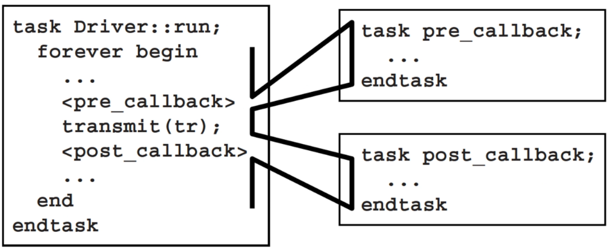
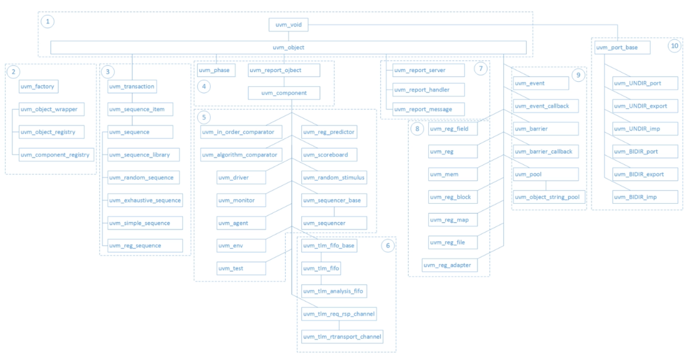
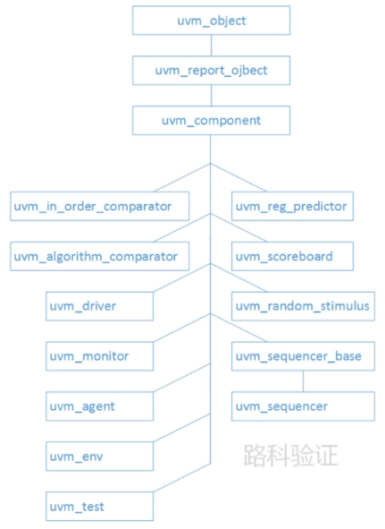
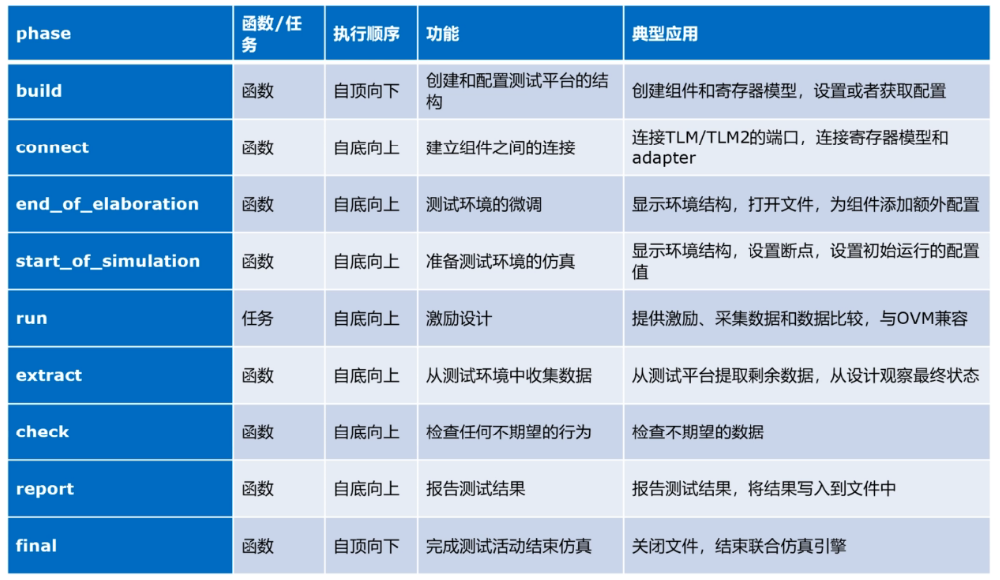
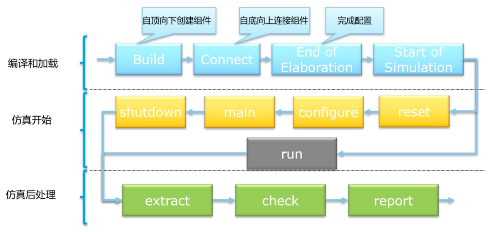
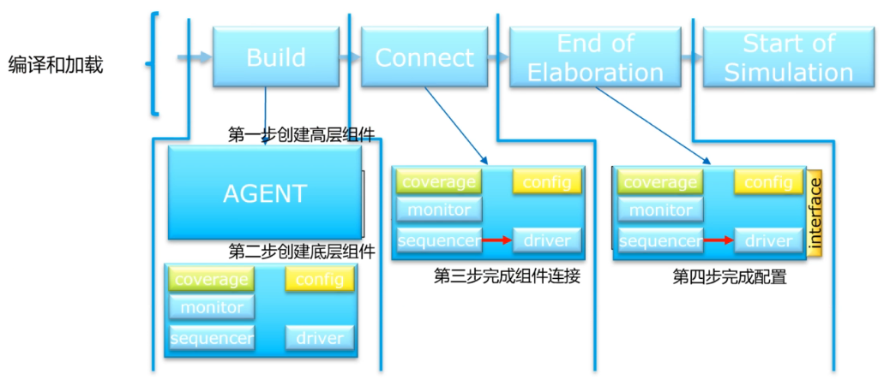

11.21
对象拷贝
- 赋值和拷贝
- 如果将p1句柄赋值给另一个变量p2，那么依然只有一个对象，只是指向这个对象的句柄有p1和p2
- 以下方式表示p1和p2代表两个不同的对象，在创建p2对象时，将从p1拷贝其成员变量例如integer，string和句柄等，该种拷贝方式称为浅拷贝
Packet p1;
Packet p2;
p1 = new;
p2 = new p1;
- 概述
- 对象的拷贝无法通过
= 来实现，因为这一操作是句柄的赋值，而不是对象的拷贝
- 如果要拷贝对象，要首先创建一个新的对象，再将目标对象的成员变量值拷贝给新对象的成员，使新对象与目标对象的成员变量数值保持一致，完成了对象的拷贝
class basic_test;
...
virtual function void copy_data(basic_test t);
t.def = def;
t.fin = fin;
endfunction
virtual function basic_test copy();
basic_test t = new(0);
copy_data(t);
return t;
endfunction
endclass
class test_wr extends basic_test;
...
function void copy_data(basic_test t);
test_wr h;
super.copy_data(t);
$cast(h, t);
h.def = def;
endfunction
function basic_test copy();
test_wr t = new();
copy_data(t);
return t;
endfunction
endclass
module tb;
...
test_wr wr;
test_wr h;
initial begin
wr = new();
$cast(h, wr.copy());
$display("wr.def = %0d", wr.def);
$display("h.def = %0d", h.def);
h.def = 300;
$display("wr.def = %0d", wr.def);
$display("h.def = %0d", h.def);
end
...
endmodule
- 总结
- 将成员拷贝函数
copy_data() 和新对象生成函数 copy() 分为两个方法，使得子类继承和方法复用较为容易
- 为了保证父类和子类的成员均可以完成拷贝，将拷贝方法声明为虚方法，且遵循只拷贝该类的域成员的原则，父类的成员拷贝应有父类的拷贝方法完成
- 在实现
copy_data() 过程中应该注意句柄的类型转换，保证转换后的句柄可以访问类成员变量
11.22
回调函数（callback）
- 概述
- 验证环境应当在复用的时候尽量少地修改模块本身，只在外部做少量的配置就可以嵌入到新的环境上。一方面可以通过顶层环境的配置对象自顶向下进行配置参数传递。另一方面可以在不修改原始类地情况下注入新的代码
- 在父类定义方法时，预留回调函数入口，使得在继承的子类中填充回调函数，就可以完成对父类方法的修改。

virtual class Driver_cbs;
virtual task pre_tx (ref Transaction tr, ref bit drop);
endtask
virtual task post_tx(ref Transaction tr);
endtask
endclass
class Driver;
Driver_cbs cbs[$];
task run();
bit drop;
Transaction tr;
forever begin
drop = 0;
agt2drv.get(tr);
foreach (cbs[i]) cbs[i].pre_tx(tr, drop);
if (drop) continue;
transmit (tr);
foreach (cbs[i]) cbs[i].post_tx(tr);
end
endtask
endclass
class Driver_cbs_drop extends Driver_cbs;
virtual task pre_tx (ref Transaction tr, ref bit drop);
drop = ($urandom_range(0, 99) == 0);
endtask
endclass
program automatic test;
Environment env;
initial begin
env = new();
env.gen_cfg();
env.build();
begin
Driver_cbs_drop dcd = new();
env.drv.cbs.push_back(dcd);
end
env.run();
env.wrap_up();
end
endprogram
- 回调函数步骤
- 预留回调函数入口
- 定义回调函数
- 例化及添加回调类的实例
参数化的类
- 概述
- 参数化的使用是为了提高代码的复用率，在SV中，可以为类增加若干个数据类型参数，并在声明句柄的时候指定类型
- 参数化的类可以在后期例化时使用不同的参数，以此来存储不同的数据类型
- 实现一个简化的mailbox
class mailbox #(type T=int);
local T queue[$];
task put (input T i);
queue.push_back(i);
endtask
task get (ref T o);
wait(queue.size() > 0);
o = queue.pop_front();
endtask
task peek (ref T o);
wait (queue.size() > 0);
0 = queue[0];
endtask
endclass
initial begin
real 0;
mailbox #(real) mb;
mb = new();
for (int i=0; i<5; i++) mb.put (i*2.0);
end
11.23
SV lab5
- reg_pkg.sv-l98
- reg_pkg.sv-l109
- fmt_pkg.sv-l142
完成，待重做
11.24
UVM简介
- 验证方法学目的提供一些可重用类来减轻水平复用和垂直复用的工作量，并且提供一套可靠的框架
- UVM面向所有数字设计，从ASIC到FPGA，以及控制逻辑，数据通路到处理器验证的全部场景
- UVM的学习结构
- UVM的类库和核心机制
- UVM的组件和层次构建方式
- 组件间的通信方式
- UVM测试场景的构成
- UVM的寄存器模型应用
- 类库地图
- 核心基类
- 工厂（factory）类
- 事务（transaction）和序列（sequence）类
- 结构创建（structure creation）类
- 环境组件（environment component）类
- 通信管道（channel）类
- 信息报告（message report）类
- 寄存器模型（register model）类
- 线程同步（thread synchronization）类
- 事务接口（transaction interface）类

UVM组件与环境
- 验证环境中，激励，监测，检查都有其对应的组件，在UVM中从基类继承的一个核心分支，即uvm_component类

- UVM环境
- UVM在验证环境构建时，引入了phase机制。可以将UVM仿真阶段层次化。



11.25
重构mcdf代码